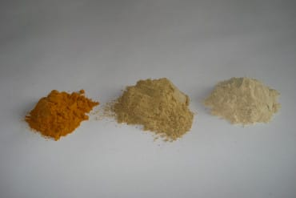

Ayurveda remedies

Keratoconus treatment in Ayurveda
The long history of Ayurveda remedies spanning thousands of years is basically and more elegantly explained as “getting along with nature and its rhythms”. On the other hand, we have realized that fighting with nature has caused great suffering in the world, nature is wise and always helps to achieve balance if you let her.
Ayurvedic treatment for keratoconus
Keratoconus treatment in Ayurveda would be indirect: Improving digestion (increase agni) and cleansing your body of metabolic debris that impair immunity and cause the reduction of enzymatic protection reaching your eyes. By improving oxygenation, and reducing mechanical stress to the cornea, the eyes will avoid further deterioration.
Ayurveda remedies
These Ayurveda remedies are highly recommended, I have used the powdered herb form for many years and I haven’t had any problems.
These Indian herbs are Tumeric, Triphala, and Ashwagandha are shown below.

Turmeric
The famous bulb is used extensively in Indian cuisine and adds the characteristic yellow color to curry dishes. Moreover, Tumeric has been recently regarded as a potent antioxidant and activator of the body’s enzymatic defenses.
This is how your body defends itself against free radical damage, and is backed by many scientific studies.
You can cook many dishes with it; from rice to curry or take it as an infusion. You can even put a little bit on a warm cup of milk or tea. A good example is the ayurvedic plate khichdi (kitchary) made with basmati rice, mung beans and turmeric, ginger, cumin, fennel, and other spices.
Triphala
One of the most important Ayurveda remedies and actually the powder made with the fruits of three myrobalan trees called Amalaki, Bibhitaki, and Haritaki. Is regarded as a powerful stimulant of digestion with antioxidant and noninflammatory properties.
In India is common to say that if you don’t have medicine but Triphala you are fine.
You can make Triphala tea on a coffee maker, put it on milk or tea or mix it with honey and eat it, you can also make Triphala eye drops with purified water, little sea salt, and of course strain the liquid very well. Triphala is very special, the first time you smell and taste it you will know you are in front of something very good for your health.
Ashwagandha
The root of this plant is regarded as having similar properties as the Chinese ginseng, stimulating the famous Nrf2 antioxidant pathway on the cells to produce protective enzymes. Ashwagandha powder is whiter than Triphala and tends to be denser so it is better to eat it than to strain it.
Many people use it for its anxiety-reducing effects and for centuries has been used to have a good night of sleep. Just put a teaspoon in a warm glass of milk and drink it before going to bed. As always be careful with what you put in your body, consult your doctor or Ayurveda practitioner, and if you have a problem stop using it.
Read my post on How to fast.
Conclusion
In short, these three remedies are highly recommended for thousands of people, and studies show that are safe and help your body in many ways.
You can find reliable distributors of these herbs on the internet, I have used the powder herb (curna), form for many years and I haven’t had any problems at all.
Would you like to give a try to these ancient remedies? Leave a comment, like my post, or subscribe to the newsletter.
Good Luck
Beto R.
Hi, I love to improve myself and others. Reach me on social media or at heribertorangel.com